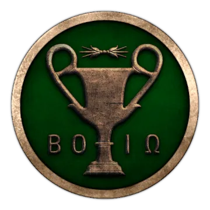
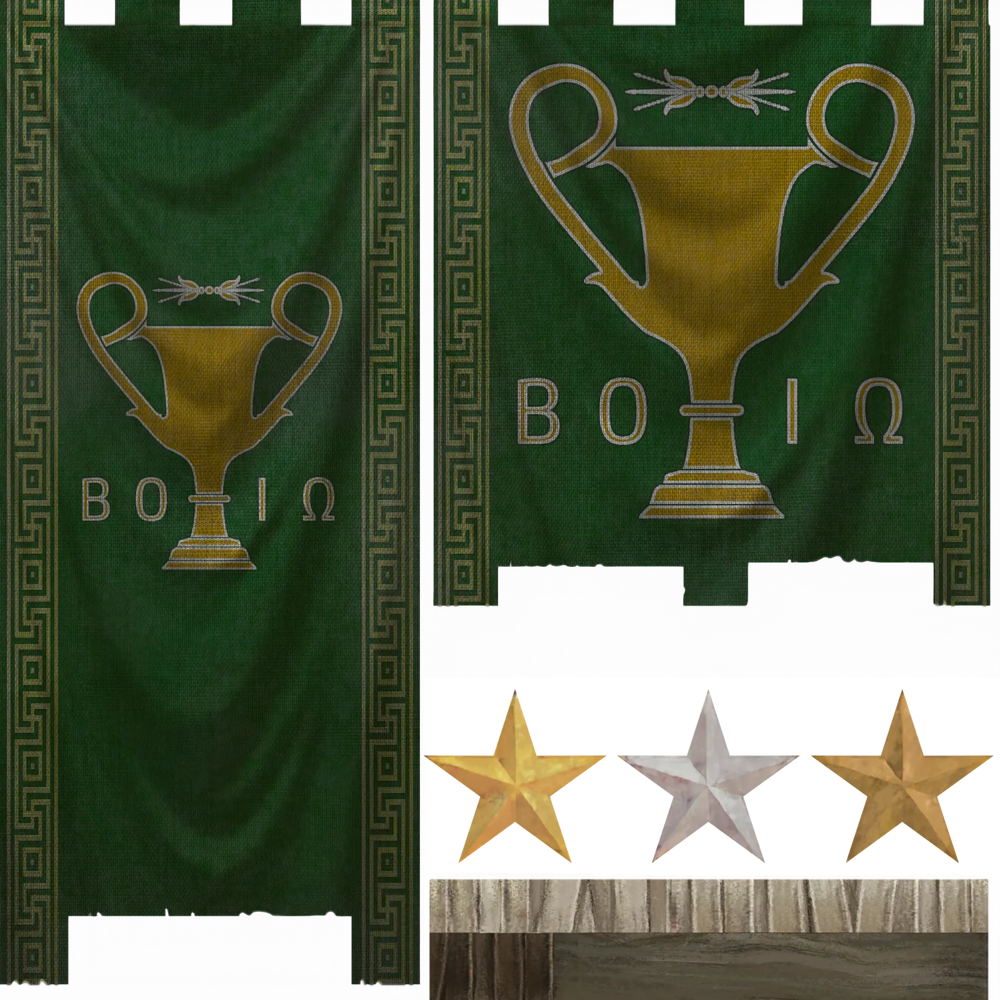

RTR: Imperium Surrectum
RTR: Imperium SurrectumThe Boeotian League
2022-02-02 · ahowl11

"The Boiotians were reputed to be inferior to none of the Greek nations in the number of their men and in military valour" – Diodoros of Agyrion
Who are we? Are we mere mortals, toys of the Gods? Or are the Gods just an excuse for our foolishness? Witless we have been, and maybe the Athenians are not wrong if they call us pigs. For like common peasants we have behaved, and still now passion and anger are overcoming our people. Who are we? Are we Boiotians? Or are we just Orchomenians, Chaironeians, Tanagrans, Thebans?
Who was the first to call our land Boiotia, after its abundance of cattle (βοῦς)? Was it Kadmos, who sailed from the purple washed coasts of Phoenicia to receive a prophecy from the Oracle of Delphi? When the white cow led him into the fertile plains of our land, he founded Thebes upon a wooden spot where the Drakon of Ares was slain. But, by Athena, Thebes is not Boiotia. They led us to glory and fame, Epaminondas and Pelopidas, the Sacred Band and the Horsemen of Thebes, brave fighters all. They broke the power of the Lakedaimonians, those self-proclaimed anointed warrior legends, and humbled the arrogant Athenians. Yet glory is always transient, and man is but a victim of Tyche. For did not the Plataians sacrifice their lives for the freedom of the Hellenes at Marathon and on the plain beneath their own city? Their glory beamed like sunshine to the world, but when walls of Lakedaimonian Hoplites, with their claret cloaks flying in the wind, surrounded the city, its oh so honourably ally Athens abandoned Plataiai. With the city perished its men and its glory, for what is it now but a story to tell our young?
The Thespians, though their city was small, fought at Thermopylai and their fame, too, radiated into the whole Oikumene. Though their sacrifice was great, the battle was lost, and the Medians razed their city to the ground. Like Plataiai, their town was rebuilt, but like Plataiai, it was destroyed once more, this time by the Thebans. And finally, Thebes itself was of ancient glory, yet when the majority of its nobles decided to throw in their lot with the Medians, Zeus himself climbed down from Olympos to punish this cowardly act. Their Medismos dishonoured them, but the ever-industrious Thebans were not to be put down, gained the ascendancy over all Boiotians and, as I told above, brought the body building Lakedaimonians and the talkative Athenians to their knees. Once again, however, their Hybris was punished, and this time Zeus sent his son Alexander to burn the city down, just like Agamemnon had burnt down Troy.
Who are we, then? Are we Boiotians? Can we even call us Boiotians, with all this anger and hatred, all this bad blood in our history? Plataiai hated Thebes, Thebes hated Thespiai, Thespiai hated Orchomenos. But are we not all Boiotian? Do we not share common traits? Do we not sacrifice to the same Gods and the same heroes? Do we not all bury our dead with Tanagran figurines? Who in our country does not shudder at the story of the Massacre of Mykalessos? Who, on the other hand, does not love the tale of the Spartoi? These are our myths, our history. We share our knowledge, our beliefs, our culture. For which Boiotian would not enjoy the lyrics of Korinna of Tanagra when she sings:
"Great pleasure the city takes, from my crystal clear voice."
Or who would not take some pride in the lines of Pindar when he claimed that Thebes was the "violet-crowned bulwark of Greece" –some of us may hate the Thebans even now when it is but a village, but deep inside we know they are Boiotians, and we’d rather take their orders than those of the pretentious Athenians, or the warmongering Lakedaimonians, or – the Ghost of Laios forbid – the Barbarians from the North. And who would not rejoice in the words of the Thespian Hesiod when he praises the simple life of our peasants? For is this not the life men were born to live, far away from luxury and Tryphe? Did Athens not become like Persepolis, and Pella like Babylon? But we Boiotians, we have always been honest and hardworking Greeks, and we will always be true to our word.
Now, Greece is under the dominion of the wine drinking Macedonians, but Boiotia is free. The Athenians, speakers of many words, are our allies now, though we do not like them. Brutal Lakedaimon is but a shadow of its former self, but with the rogue Aitolians in the West, a new danger looms. Maybe friendship can be forged with the Achaians to the South, honest people like us who relish some dirt on their Hoplite armour. The king, Antigonos, too, enjoys our friendship, but his people are half Barbarians and cannot be trusted. Word has reached us that the Athenians and Lakedaimonians are planning a revolt. Should we join them? Should we warn the king? Or should we not rather do it our own way? For who are we? We are a people, a good people, god-fearing, diligent and straightforward. We are peasants, we are warriors, we are Hoplites, we are horsemen. We are Boiotians.
--------
Hello everyone! We are doing DD's by committee due to illness and RL making many of us very busy, but everything is going well development wise. We are on pace for when we want to release, we just won't tell you that timeframe 🙂
In todays Dev Diary, we will preview the Boiotian League. The history of the Boiotian League in our time is not as famous as that in the classical period, but they remained an independent power and a respectable military force no one in Greece could ignore. Enjoy!


The Boiotians might be the toughest, if not one of the toughest factions to play as in RIS. The odds are stacked against you: 1. You have a weak army 2. You are vulnerable from all sides 3. You start with only one region
You have a very uneasy alliance with Athens, though allied formally, you hate each other. The Antigonids to the north have major interest in the lands to your south and you are an obstacle that they'd like to move out of the way. To the west, the ever treacherous and scheming Aitolians lurk, waiting to incorporate your league into theirs. If you can survive all of this, many other great powers are in the vicinity, and Rome can always land it's legions on the shores of Greece. It will take courage, strategic skill and just the right amount of insanity to gain victory as the Boiotian League. Will you accept the challenge?
That's it for todays DD! Hope you all enjoyed and learned a bit about the Boiotian League. Until next time!